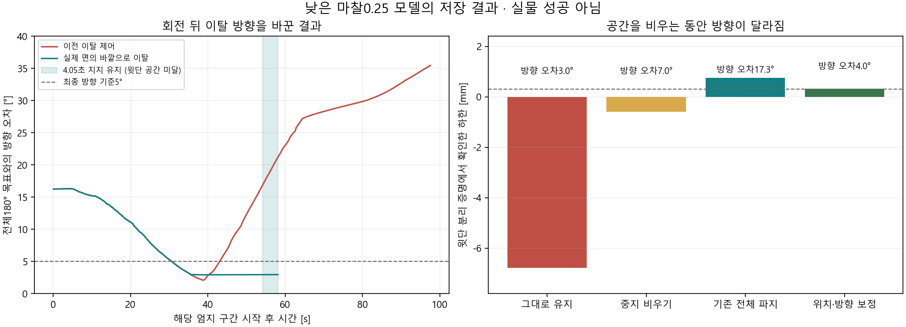
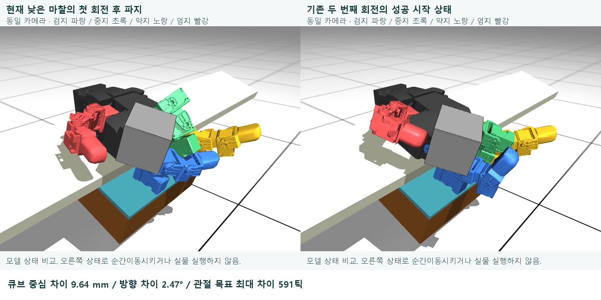

실제 첫 유지 → 큐브 위치 이동 → 방향을 유지하며 시작 파지 맞추기 → 기존 회전 → 최종 유지
엄지의 실제 접촉면 바깥으로 빠지는 제어에서는 최종 약2.964도 오차로4050샘플 지지를 유지했다. 남은 공간 부족은 중지 뿌리 외형3개였다. 중지를 비우면 오차6.952도·공간 하한-0.600mm, 전체 기존 파지로 바꾸면 공간0.752mm·오차17.293도로 서로 다른 조건이 미달했다.
마지막 위치·방향 예측 보정은 86목표에서 최종 오차4.032도, 공간 하한0.329mm, 지지4050/4050 및 공간4050/4050을 통과했다. 하한은 기존0.3mm 기준에 가까우며 일반 오차 내성을 보장하지 않는다.
원래 배치부터 9614목표, 721050개의1ms 검사를 초기화 없이 재생했다. 전체 지령75ms=True, 두 회전·두 유지 통과=True. 최종 오차4.073도.
이는 특정 마찰0.25 가정의 모델 결과다. 기존 배치1mm 실패, 실제 관측 좌표 정합, 왼손 도달·하중, 실물 전체 실행은 별도이며 새SAC 학습·증류·실물 전송은 수행하지 않았다. 실제450mA와 모델 접촉 힘은 환산하지 않는다.

막대 높이는 공간 증명에서 확인한 하한이다. 음수이면 해당 공간 확보 검사가 미달했다는 의미다.
마지막 보정·4050샘플 유지 · 원래 배치부터 전체 독립 재생새 경로는 모델에서 721.05초, 첫 유지 대비 마지막 위치 변화 20.876mm다. 왼손이 이 이동을 흡수할 수 있다고 검증한 것은 아니다. 첫 방향 기준과 여유는 0.0186도, 마지막 공간 기준과 여유는 0.0310mm다.
| 변화 조건 | 실행 목표 | 중단 사유 | 최종180도 오차 | 전체 결과 |
|---|---|---|---|---|
| mu024 | 7744 | ['range_rad'] | 107.902 | 미달 |
| mu026 | 7744 | ['range_rad'] | 106.945 | 미달 |
| xplus1 | 7744 | ['range_rad'] | 107.618 | 미달 |
마찰0.24·0.26 또는 초기 배치+1mm 조건에서 같은 저장 지령을 재생하는 비교는 모두 실패했다. 특정 조건의 성공과 작은 오차에 대한 내성은 별도다. 다음은 현재 관측에 맞춰 접촉 전 재배치와 회전 후 파지를 보정하는 제어의 검증이다. 지금 새 물리 실행 명령을 허용하지 않는다.
전체 재생 중 원래 학습 정책에서 유래한 저장 앞부분은1700목표이고, 나머지는 모델 교사 지령이다. 이 전체 지령 재생을 새SAC 학습·증류·실물 정책 배포로 설명하지 않는다.
전체 경로·좌표 변화·오차 비교 원본이전 사용량 제한 이후 후속 계산을 실제 실행했다. 보존된 부분 경로의 현재 오차는 4.032도이며 최종 회전·유지 성공은 아니다.
6736목표, 지령75ms=False, 최종 오차37.578도, 중단=[]. 6736목표, 지령75ms=True, 최종 오차37.591도, 중단=[]. 7936목표, 지령75ms=True, 최종 오차15.873도, 중단=[]. 9614목표, 지령75ms=True, 최종 오차4.073도, 중단=[].
정확한 저장 시각 재생의11개 상태 연결은 모두 일치했다. 전체75ms 재생도 원래 관절·충돌·추종 제한을 넘지 않았고 첫4050샘플 유지에서 지지와 윗단 공간을 다시 확인했다.
중지 일부의 반대 방향 접촉만으로 차단하던 보조 검사 대신, 손끝과 중지 전체의 합산 방향을 검사하는 비교를 수행했다. 실제 예에서 반대 지지 모멘트-0.00158N·m보다 손끝의+0.02799N·m가 컸고 원래 모델 제한도 통과했다. 이 보조 검사 수정은 전류·관절·충돌 한계 변경이 아니다. 그래도 회전 정체는 남았다.
엄지 하중 완화는 중간 오차21.6도 뒤 큐브가 기울고 이탈하는 실패로 끝났다. 약지 접촉4면 탐색에서는 새 후보를 찾지 못했고, 엄지는 정적 후보가 있었지만 단순 접근3경로는 큐브 자세를 흐트러뜨렸다. 모두 실패로 보존한다. 이어지는 전체 손 예측 제어의 결과는 아래 원본 기록에 포함한다.
실행 결과와 다음 계산 상태마찰0.25 가정에서 중지의 접촉 위치를 큐브에 맞춰 갱신하는 모델 제어를 만들었다. 두 번째 회전의 목표 오차는 약80.5 →51.1도로 감소했다. 압력0.8N 가정으로 이어 민 별도 분기는42.7도에서 중지 벌림 관절의 상한 접근 때문에 멈췄다. 상한에 닿기 전 상태에서 중지를 다시 배치하고 우회 접근한 새 분기는 원래 관절·충돌·추종 제한을 넘지 않고37.578도까지 줄었다. 최종 유지 단계에는 아직 들어가지 않았다.
중지 접근 경로240목표를 별도로 재생해18000개의1ms 상태에서 지지와 저장 끝 상태 일치를 확인했다. 도달 끝의 실제 간격7.462mm는 독립 형상 계산과도 일치했다. 이후 재배치 경로는 원래 모델에서 큐브와 충돌하도록 지정된 형상만 확인하며, 자기 접촉용 형상을 큐브 장애물로 잘못 추가하던 계획 검사를 바로잡았다. 모델 충돌 설정과 원래 중단 기준은 바꾸지 않았다.
전체6736목표 구간의 저장 시각을 검사하니 중간에 중단된 연구 유지의 마지막 지령이38ms였다. 이 구간을 포함한 정확한 상태 연결 재생과 모든 지령75ms 비교가 필요하다. 구간별 성공을 전체 실행 준비 완료로 세지 않는다.
추가 압력 비교와 처음 배치부터의 독립 재생은 자동 승인 검토의 사용량 제한으로 실행되지 않았다. 위험하다는 판정이 아니라 승인 검토가 진행되지 못한 것이며, 다른 실행 방식으로 우회하지 않았다.
완료 결과·시각 검사·미실행 계산 목록 · 240목표 독립 재생현재 낮은 마찰 모델의 첫 유지와 기존 두 번째 회전 성공 경로의 시작 상태를 비교했다. 큐브 중심 차이는 9.638 mm, 방향 차이는 2.465도, 손가락 지령 차이는 최대 591틱이다. 기존 성공 상태는 이동 목표이며 실제 모델 상태를 그곳으로 순간이동시키지 않는다.

시작 상태 원본 비교123목표. 시작 위치 오차 9.638 → 0.970 mm, 첫90도 방향 오차 3.563도. 종료 사유 final_hold_upper_certificate, 해당 경로의 자체 진입 유지 검사=False.
계획·실패를 포함한 전체 기록400목표. 시작 위치 오차 0.970 → 0.872 mm, 첫90도 방향 오차 5.800도. 종료 사유 None, 해당 경로의 자체 진입 유지 검사=False.
계획·실패를 포함한 전체 기록320목표. 시작 위치 오차 1.640 → 2.378 mm, 첫90도 방향 오차 4.450도. 종료 사유 None, 해당 경로의 자체 진입 유지 검사=False.
계획·실패를 포함한 전체 기록중지를 먼저 단순 정렬한 경우 모델 자기 접촉에서 멈췄다. 검지를 먼저 옮긴 두 순서는 네 손가락 목표까지 충돌 없이 도달했지만 큐브 방향이 기존 시작 상태에서 약9.7~9.8도 틀어졌다. 순차 정렬 완료 2개를 회전 성공으로 세지 않는다.
4개 개별 동작과6개 순서 비교첫 차이는 110목표에서 나타났고 방향 차이가 3.057도였다. 마지막 교사 구간 뒤 목표 오차는 명목 3.852도, 마찰0.25 84.751도였다. 정확한 시작 상태만 맞추면 기존 지령을 그대로 재사용할 수 있다는 가정은 이 조건에서 성립하지 않았다. 낮은 마찰 대조의 초기화는 실제 도달 연결로 세지 않는다.
단계별 실제 모델 상태·접촉 비교중지 접근 중 약14.8도 회전했지만 실제 도달 뒤 중지 끝 접촉의 회전 모멘트 팔은 -26.591 mm로 반대 방향이었다. 이 상태에서 압력만 더한 기존 연구 제어는225목표에서80mm 이탈 조건에 걸렸다. 이를 올바른 접촉 도달이나 전체 회전 성공으로 세지 않는다.
실제 접촉 방향 재검사압력 제어에 실제 접촉 방향 검사를 추가했다. 위 반대 방향 상태는 세 압력 조건 모두 지령0개에서 거부했다. 명목 모델의 기존 정상 압력 제어는 앞10목표를 재현했다. 반대 방향 차단은 회전 경로 완성을 뜻하지 않는다. 큐브를 스치지 않는 접근 경로를 별도로 계획한다.
지령0개 차단 결과| 진입 방식 | 재배치 전 중심차 mm | 재배치 후 중심차 mm | 재배치 후 방향차 도 | 최종180도 오차 | 중단 | 두 번째 유지 |
|---|---|---|---|---|---|---|
| direct_reconfigured_continued | 4.958 | 4.958 | 2.514 | 87.457 | [] | 미달 |
| exact_nominal_entry_low_friction_control（기준 상태 초기화 대조） | 0.000 | 0.000 | 0.000 | 84.721 | [] | 미달 |
| repositioned_then_aligned | 0.970 | 1.274 | 12.497 | 88.212 | [] | 미달 |
손가락 목표만 같아도 큐브 위치와 방향이 다르면 기존 회전 결과가 달라졌다. 중간의 윗단 공간 미달은 회전 도중의 진단으로 기록하고, 최종 유지에서 전체 공간 검사를 요구한다. 첫 유지의 기존 작은 기준 미달을 통과로 바꾸지 않는다.
모델 연구 기록. 실제 모터·카메라는 사용하지 않았다. 실제 관측 좌표 정합과 실물 전체 동작은 미검증이다.
검증 범위와 출처 · 인계 상태